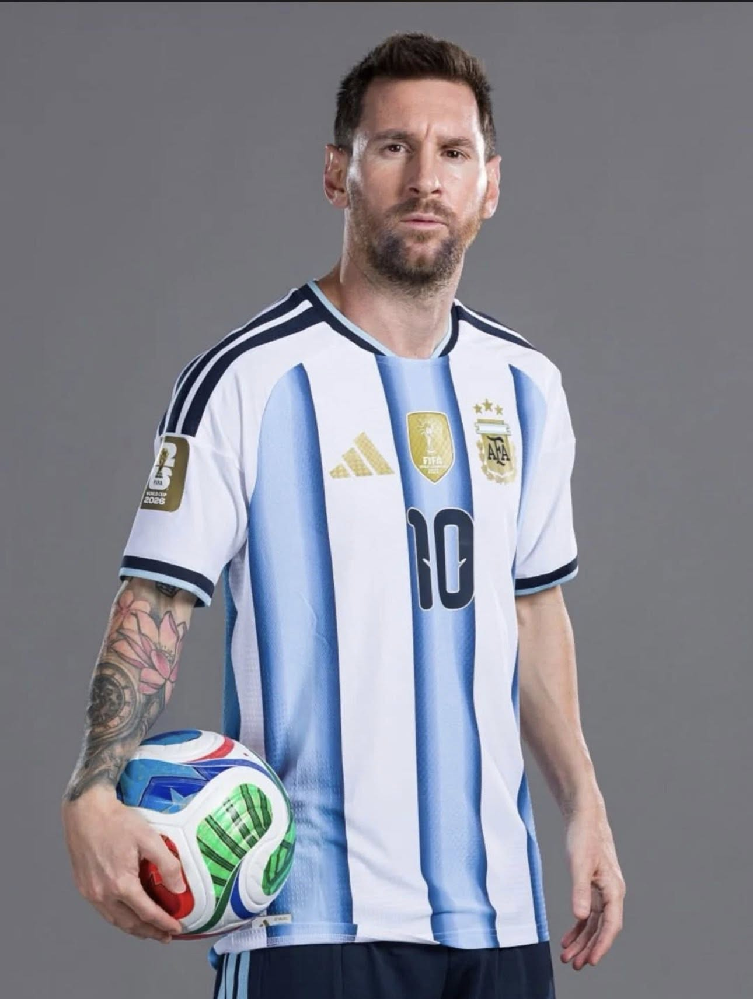
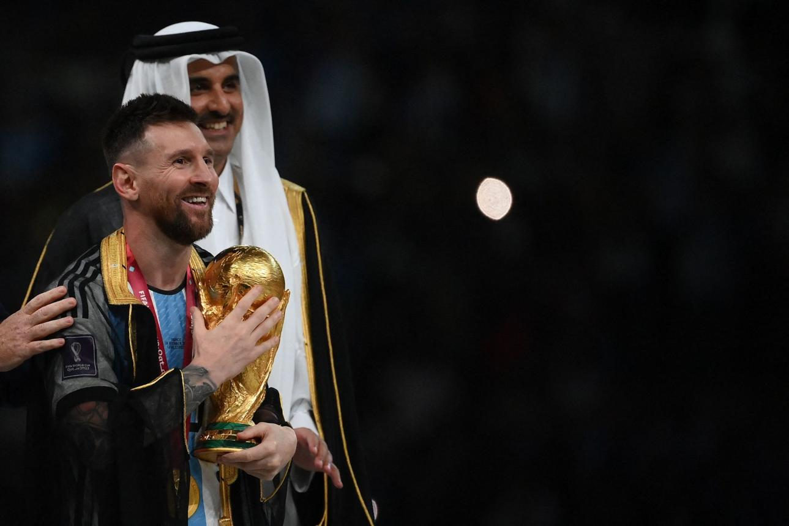
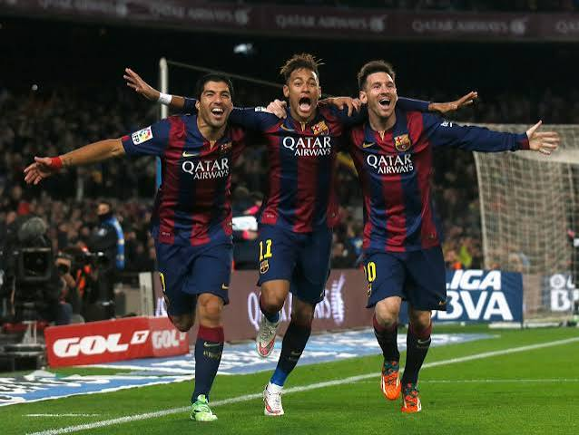
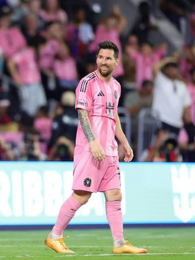
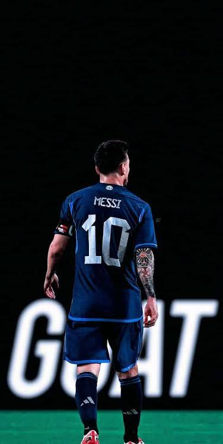
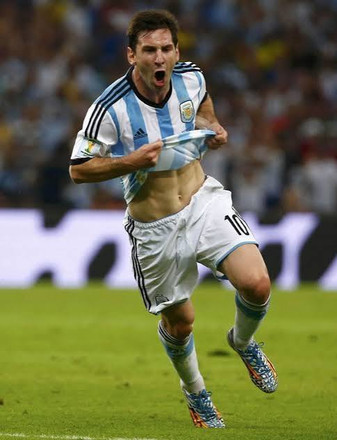
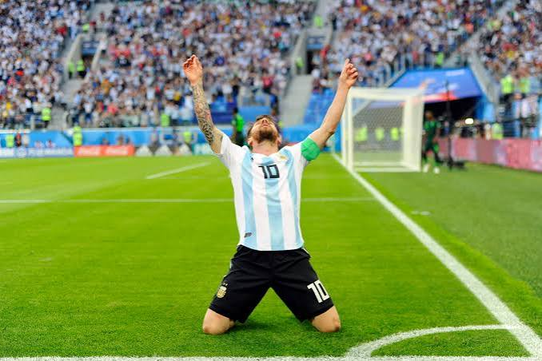
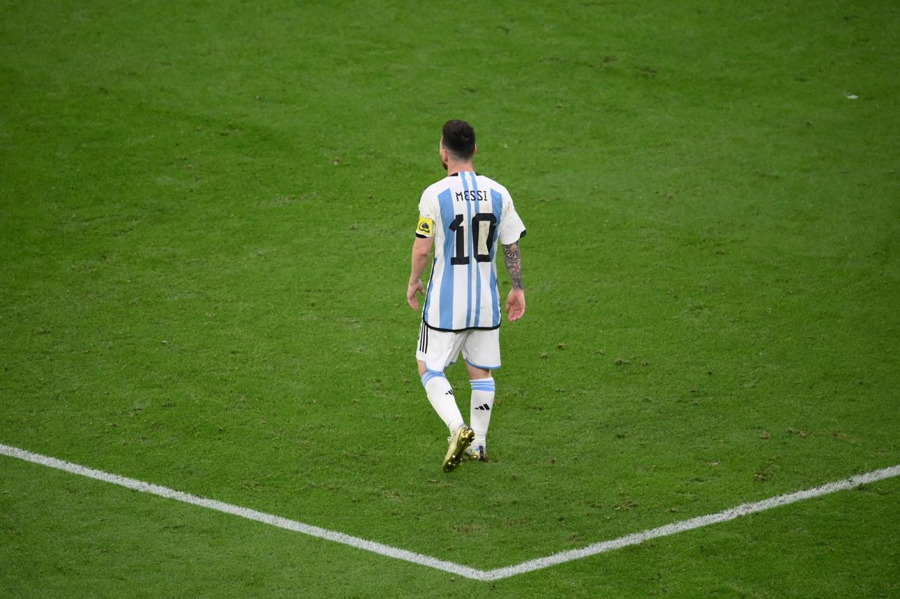
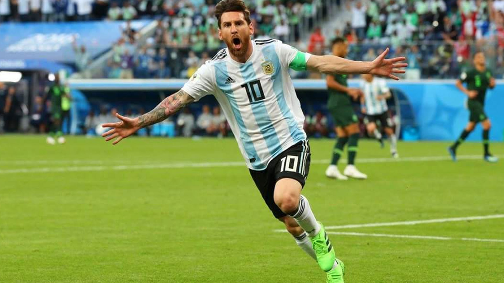

Germany 2006
A young Messi made his World Cup debut and showed the world the talent that would define a generation.
For every Argentine footballer, the FIFA World Cup represents the highest dream. Lionel Messi's journey through the tournament became one of the most emotional stories in football history.

A young Messi made his World Cup debut and showed the world the talent that would define a generation.

Expectations were high, but Argentina's journey ended in disappointment against Germany.

Messi led Argentina to the final and came within one match of lifting the trophy.
Great achievements often require great sacrifices. The years between 2014 and 2022 tested Messi's resilience and commitment to Argentina.




Another difficult chapter that strengthened Messi's desire to continue fighting for his country.

The dream became reality. Messi led Argentina to World Cup glory and completed football's most iconic story.

As the football world looks toward 2026, fans continue to celebrate Messi's legacy and everything he has given to the sport.
Lionel Messi has participated in multiple FIFA World Cups and has become one of the most influential players in tournament history. Across different generations of teammates, managers, and football eras, he remained the central figure of Argentina's national team.
His World Cup journey includes unforgettable goals, assists, leadership performances, and record-breaking appearances that helped define one of football's greatest careers.
The World Cup journey was never only about winning. It was about perseverance, leadership, and inspiring millions of people who saw themselves reflected in Messi's determination to never give up.